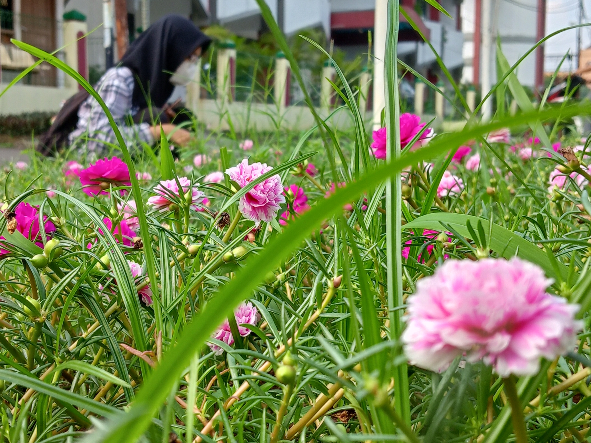
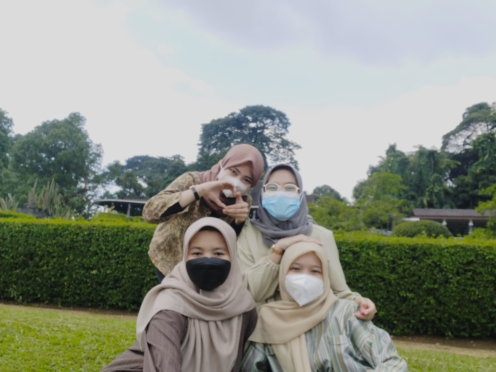

Journey
Foto Bunga di Belakang Kampus

Saat kami ingin menuju ke perpustakaan pusat, kami terpanah akan keindahan bunga yang berada di belakang fakultas kami. Sehingga kami pun berhenti untuk melihat bunga bunga tersebut. Selain, melihat lihat bunga kami pun mengabadikan bunga tersebut dengan memfoto bunga bunga ... Read more
Ke Kebun Raya Bogor bersama dengan Kalian

Perjalanan kami ke Kebun Raya Bogor ini merupakan perjalanan paling jauh yang pernah kami lakukan bersama. Kami pergi ke Kebun Raya Bogor ini menggunakan transportasi umum KRL dari stasiun Pondok Cina ... Read more